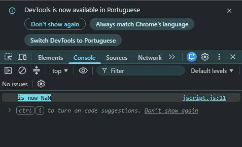
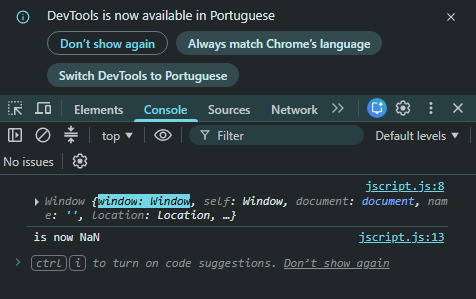
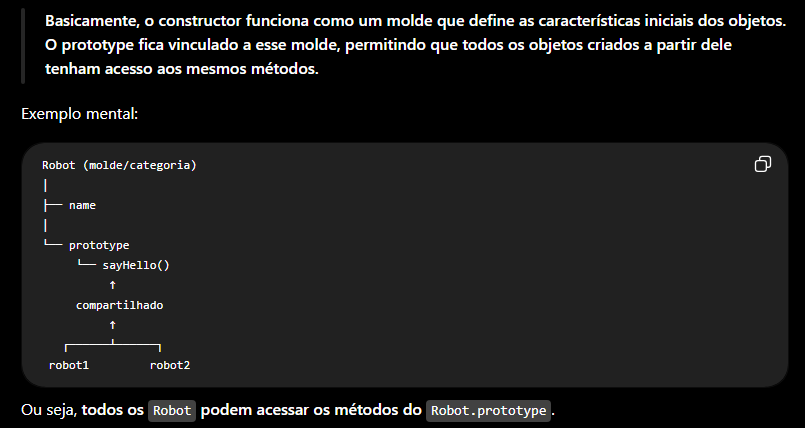

This in details
Intro
Agora veremos mais sobre a palavra chave this e seu uso em metodos de objetos.
Agora veremos mais sobre a palavra chave this e seu uso em metodos de objetos.
JS:

Para entendermos melhor, iremos iniciar criando o código da seguinte forma:
function User(name, age = 0) {
this.name = name;
this.age = age;
}
User.prototype.celebrateBirthday = function() {
this.age++;
console.log(`${this.name} is now ${this.age}`);
}
const james = new User('James', 39);
james.celebrateBirthday();
Primeiro, criamos o constructor User com os parâmetros (name, age = 0). Ele funciona como um molde para criar objetos User.
Em seguida, acessamos o User.prototype e adicionamos o método .celebrateBirthday. Dessa forma, todos os objetos criados a partir do User poderão acessar esse método.
Nosso metodo .celebrateBrithday() tem como funcao incrementar a idade e imprimir a mensagem passada.
Esse metodo é armazenado na propriedade do prototype do constructor, entao james que herda esse objeto pode usar o metodo celebrateBirthday().
Em vez da palavra function iremos usar um arrow function se fizermos apenas isso ira quebrar nosso codigo, ex:
User.prototype.celebrateBirthday = () => {
this.age++;
console.log(`${this.name} is now ${this.age}`);
}

Quando tinhamos uma funcao regular com function() {}, this era o objeto antes do ponto(.) ou seja, o objeto que chamou o metodo
Mas as arrow function, funcionam de forma um pouco diferente, elas nao recebem this quando chamadas. Em vez disso usam o valor de this do fechamento.
Nesse caso para essa funcao ele sera imediatamente o this global. Nesse caso ele sera nosso objeto Window, podemos observar isso em nosso devTools se imprimirmos this:
function User(name, age = 0) {
this.name = name;
this.age = age;
}
console.log(this);
User.prototype.celebrateBirthday = () => {
this.age++;
console.log(`${this.name} is now ${this.age}`);
}
const james = new User('James', 39);
james.celebrateBirthday();

Acontece que em nossa funcao o this se tornou o objeto global Window, ele nao tinha uma propriedade de idade, entao quando executamos ele é visto como indefinido. E se adicionarmos 1 em indefinido como (this.age++), ele se torna NaN.
Em outras palavras, nao podemos usar uma arrow function comum isso pois ela nao tera o this correto. Por isso usamos uma function regular
Browser Global this === window
() => {} this === extraido do closure
f() this === undefined
obj.method() this === obj before
new f() this === undefined
f.call(obj) this === obj
f.apply(obj) this === obj
f.bind(obj)() this === obj
Browser Global -> this === window: se usarmos this fora de qualquer funcao, tera como resultado window.
() => {} -> this === extraido do closure: se usarmos arrow functon nao possui seu proprio this, mas pega o do closure, sendo ele da funcao mais proxima ou do this global.
f() -> this === undefined: se usarmos dessa forma, normalmente seu this, sera indefinido, ja que nao há um objeto antes do ponto. Mas esse comportamento muda se removermos o 'use strict' anteriormente, tais funcoes nao eram chamadas como metodos, mas desse jeito: this era o objeto global window. Mas isso mudou, agora é sempre indefinido
obj.method() -> this === obj before: se usarmos dessa forma o this se torna o objeto antes do ponto(.)
new f() -> this === undefined: quando usamos a palavra chave new ela altera o comportamento da funcao entao this nessa funcao sera o objeto recem criado, herdado do f.prototype
Tambem podemos especificar que o this deve ser dentro da funcao, para fazermos isso usamos os metodos de servico call, apply e bind
Os metodos call e apply executam nossa funcao, e o primeiro parametro torna-se this, se precisarmos adicionar mais parametros teremos que adiciona-lo ex: call(obj, 1, 2) podemos fazer o mesmo tanto para apply quanto para bind
A diferenca é que, para apply, temos que escrever os argumentos como um array ex: f.apply(obj, [1, 2]), ou seja, passamos this obj e em seguida, um array de argumentos.
O metodo bind nao chama nossa funcao, ele retorna outra. E esta funcao adicional, quando a chamamos, executara nossa funcao original com este this e esses argumentos iniciais.
Os metodos call, apply e bind sao raramente utilizados.
Basico:
Basicamente: quando usamos o prototype, podemos imaginar da seguinte forma: acessamos o objeto prototype através do ponto (.) e armazenamos nele uma função que poderá ser compartilhada pelos objetos criados pelo constructor.

Cada constructor possui seu próprio prototype. Os objetos criados por aquele constructor acessam os métodos disponíveis nesse prototype.
Ex:
Se tivermos dois constructors:
function Car(modelo, placa) { this.modelo = modelo; this.placa = placa; } function User(nome, sobrenome) { this.nome = nome; this.sobrenome = sobrenome; } User.prototype.sayHello = function() { console.log(`Olá ${this.nome} ${this.sobrenome}`); };
O unico que tera acesso a esse metodo sera o User